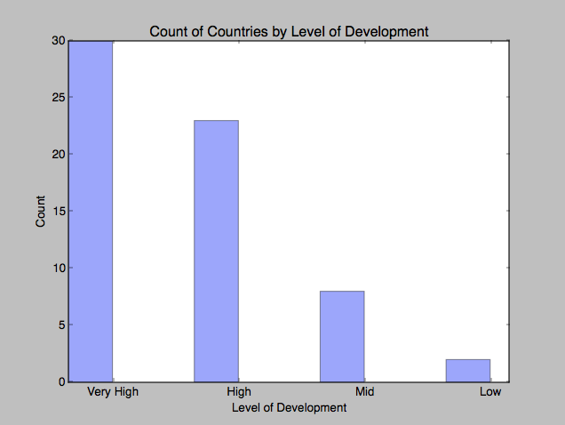
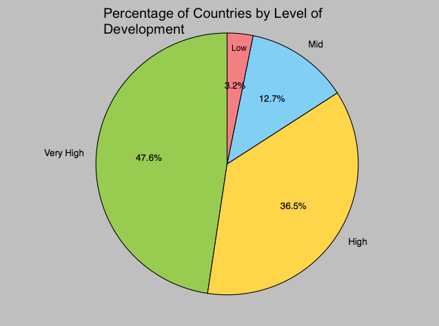
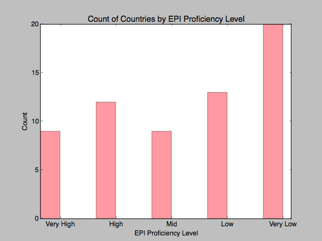
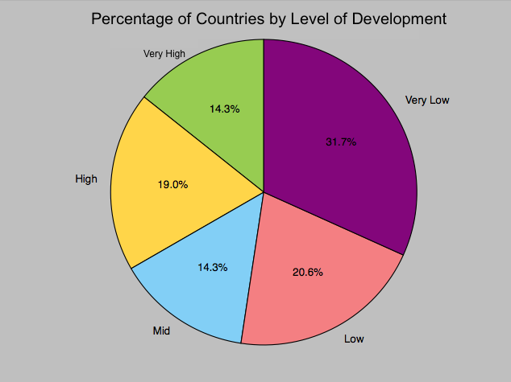
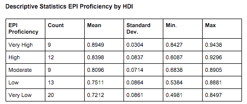
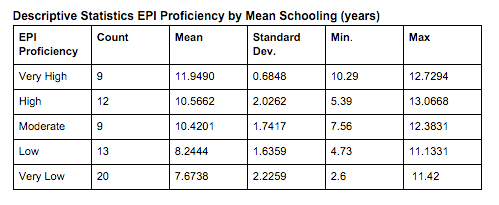
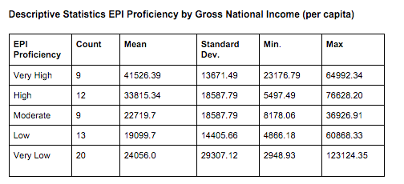

Quality: About This Data Set
I merged two data sets, one from the English Proficiency Index and one from the United Nation's Human Development Index. from the which ranks the skills of adult English speakers in different countries.
Question: Is the data complete?
As noted early, the EPI data was gathered from self-selected test-takers.This self-selection is indicative of bias in the data. A possible reason for bias is that only individuals with access to reliable internet and knowledge of the Education First English tests could participate. Additionally, in merging the two data sets, I was forced to lose data points. The EPI data only ranked 63 countries, while the HDI data had about 186 countries. This is nearly 3x as many countries.
Because the HDI presented fairly extensive data, I decided that it would not affect the completeness of the data. As such, in merging the data, only countries in the intersection of those data sets remained in the final set. With this in mind, I hoped to see what was lost from this data set in merging it with the EPI data. I decided that this would in turn provide a better picture of how the EPI data led to bias.
Exploration
| A. | B. |
|---|---|
|  |  |
Analysis
As demonstrated in the data,the sample in the data set is skewed towards countries with very high developed countries. While bias was identified in the data, I decided that it didn't impact my overall analysis. I assumed that most countries that would care about English Language proficiency would be from higher developed countries. It seemed reasonable to assume that countries with lower human development would have more important priorities over English language learning.
Additionally, in counting how English language proficiency was distributed by country, I saw that there was still a reasonable distribution of proficiency even within this group of highly developed countries
| A. | B. |
|---|---|
|  |  |
Is the data coherent?
Examining the evidence above, most countries have Very Low English proficiency. This is true despite the fact that most of the countries in this data set are from highly developed countries. This makes sense because English is being treated as a second language. Furthermore, because the EPI advertises itself as a language learning company that people can use to improve/asses their English, it makes sense that the majority of the samples do not hold high English proficiency.
In regards to my original question, What factors might correlate with English Language Proficiency more statistical analysis is necessary. I thought that comparing HDI Score vs. EPI Score, Mean Years of School vs. EPI Score, and Mean GDI vs. EPI would hold some insights.
| A. | B. | C. |
|---|---|---|
A quick glance at the scatterplot suggets that there might be some relationship. This supports my assumptions that Mean Years of Schooling and Gross National Income might be positive correlated with English Language proficiency. More rigorous analysis is needed to see if these are statistically significant relationship.
| A. | B. | C. |
|---|---|---|
|  |  |  |
In chart B, the means years of school all increase with EPI Proficiency. This pattern almost holds true when examining Gross National Income. The Very low category has a greater mean that moderate and low proficient countries, but the data from the very low group also has a very large maximum and standard deviation, accounting for this. The standard deviation does seem to vary quite a bit for the Gross National Income, but this is also measured by capita. Assuming that the data is correct, all of these distribution seems reasonable. However, the question of correctness is still open for discussion.
Is the data correct?
Because participants were self-selected, there is the concern that sample English proficiency is not representative of a country’s proficiency. However, I couldn’t think of any tactics to address this. There is the possibility that conclusions from this set are incorrect, but more exploration beyond my abilities are necessary. There aren’t many other organizations that have attempted to measure English language proficiency. TOEFL test scores have been used to rank countries, but that also presents a sampling bias. As such, there were no other data sets that I could turn to for validation. As of this exploration, I don't have proper evidence to find out whether this data is correct or not. But, I am tempted to believe that the data is on the correct side.